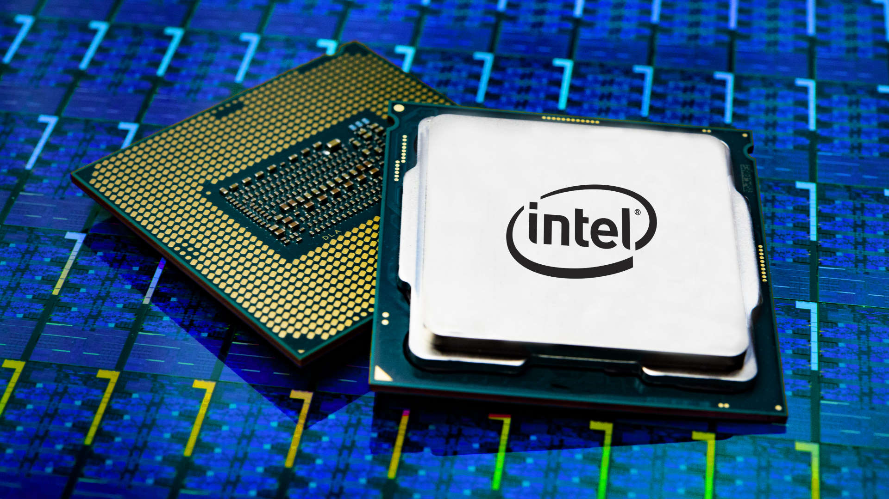
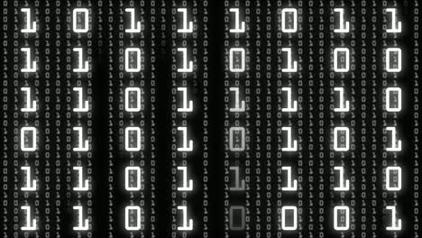
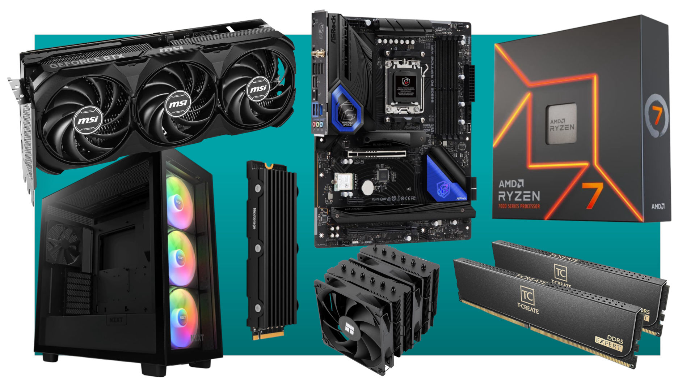

The Basics
At the core of every computer is the CPU — the Central Processing Unit. Think of it as the brain of the system. It takes instructions from programs and carries them out, step by step, incredibly fast. Whether you're playing a game or writing a paper, the CPU is behind the scenes doing the work. It makes decisions, performs calculations, and keeps things running, all within milliseconds.
Input and Output

Every time you press a key, click a mouse, or speak into a mic, you're giving the computer input. The computer takes that input, processes it, and sends back output — like displaying a letter on the screen, playing a video, or making a sound. It’s like having a super-fast translator in the middle, turning what you do into something useful.
Binary Code
Inside, computers don’t understand words or pictures — they only understand 1s and 0s. That’s called binary code. Every photo, song, or game you use is turned into these tiny digits. The computer uses millions (or billions) of these numbers to store and understand everything you do.
Parts Working Together
Computers are made of several key parts that all work as a team. The CPU does the thinking, RAM holds information temporarily, and the hard drive or SSD stores your files. The motherboard connects everything, and the GPU handles visuals like videos and games. Fans or liquid coolers keep it all from overheating. Every part has its job — and when they work together, the computer runs smoothly.
Software and Operating Systems

Hardware is just half the story. Software — like your apps and programs — tells the computer what to do. And the operating system (like Windows, macOS, or Linux) is the main controller that manages everything on the computer. Without software, all those parts wouldn’t know what to do with each other.